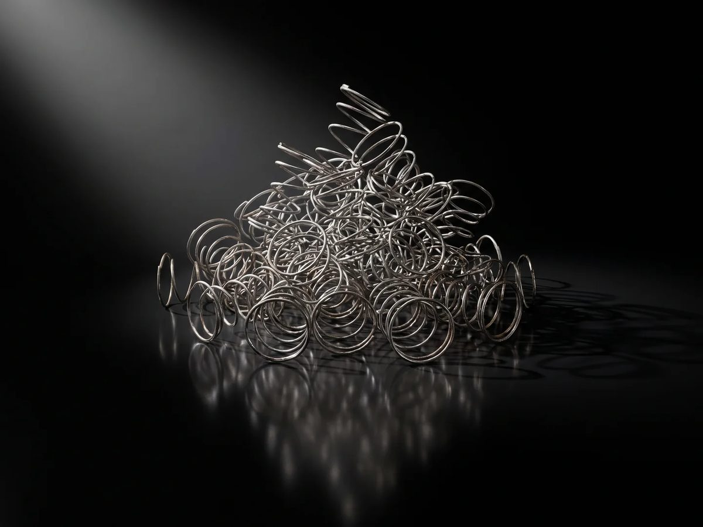
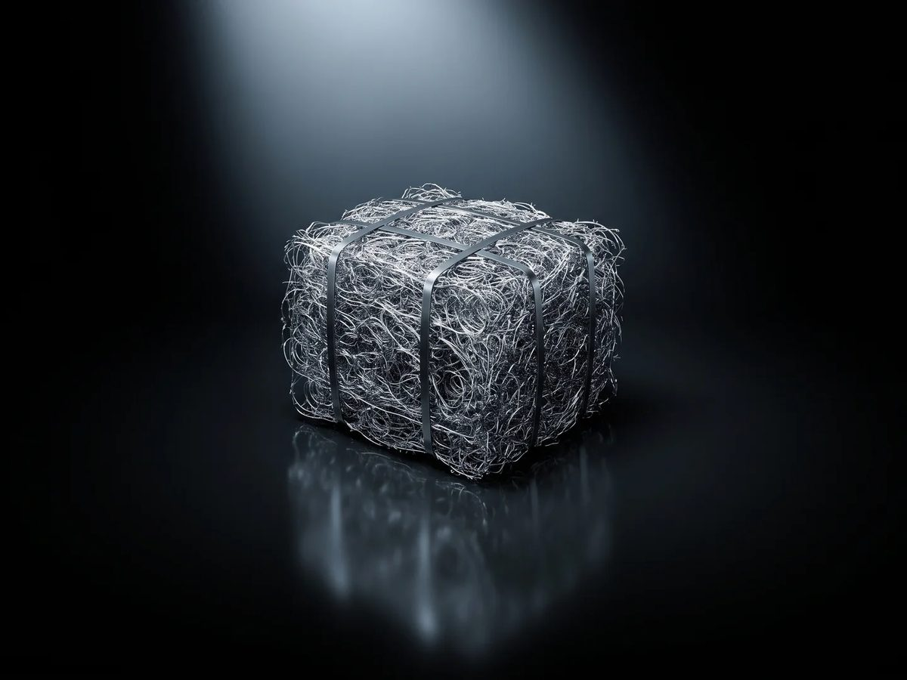

Recovered from mattress spring units at our plant in Victoria. Shredded, separated by magnets, vibration, suction and an electrostatic fibre separator, then supplied loose or baled. One input, one product, one process.
Material
Processed high-tensile / high-carbon spring steel scrap, recovered from mattress spring units
Ferrous content
Approximately 99%
Contamination
Around 99% free of fabric, foam and other non-metal material after magnetic, vibration, suction and electrostatic separation
Origin
Recovered and processed at the Recycle Group plant in Victoria, Australia
Documentation
Load statement per dispatch: source stream, process, weighed output, bale count, container number
Production
6–10 t per day, year-round
Availability
Typically 130–250 t per month
Form
Loose (bulk) or baled; bale dimensions vary with the press cycle, confirmed per order
Supply
Road or rail within Australia; containerised at our plant for export (≈25 t of bales per 40-ft box, nominal)
Samples
On request, before any commercial commitment

Loose processed spring steel (rendered)

Baled for handling and export (rendered)
The process
Shred. Twin-shaft shredders break the mattress down to steel, foam, fibre and fabric.
Magnetic separation. Three magnets pull the ferrous fraction from the shredded stream.
Vibration and suction. Vibrating decks and high-volume suction strip fabric and foam; dust extraction keeps the air clean.
Electrostatic separation. An electrostatic fibre separator removes the last light fibre.
Check and bale. Inspected, then loaded loose or pressed into bales. Every bale counted before dispatch.
What we do not claim
We do not currently provide independent laboratory testing, chemical composition analysis, moisture testing or certified bulk-density figures. Buyers are welcome to run their own assessment on a supplied sample.
Contact
Nigel Taylor Director of Brand & Growth The Metal Recycling Company A Recycle Group business 0427 888 222 nigel@junk.com.au rdodeployme.github.io/global-steel
The Metal Recycling Company · Processed spring steel specificationFigures describe the product as it leaves our line. October 2026.